수질환경기사 (2016-03-06 기출문제)
1과목: 수질오염개론
1. 미생물의 종류를 분류할 때, 탄소 공급원에 따른 분류는?
- Aerobic, Anaerobic
- Thermophilic, Psychrophilic
- Phytosynthetic, Chemosynthetic
- Autotrophic, Heterotrophic
(정답률: 80%)

2. 분뇨의 특징에 관한 설명으로 틀린 것은?
- 분뇨 내 질소화합물은 알칼리도를 높게 유지시켜 pH의 강하를 막아준다.
- 분과 뇨의 구성비는 약 1:8~1:10 정도이며 고액분리가 용이하다.
- 분의 경우 질소산화물은 전체 VS의 12~20% 정도 함유되어 있다.
- 분뇨는 다량의 유기물을 함유하며, 점성이 있는 반고상 물질이다.
(정답률: 77%)
3. 콜로이드의 성질과 특성에 대한 설명으로 틀린 것은?
- 제타전위는 콜로이드 입자의 전하와 전하의 효력이 미치는 분산매의 거리를 측정한다.
- 제타전위가 클수록 입자는 응집하기 쉬우므로 콜로이드를 완전히 응집시키는데 제타전위를 5~10mV 이상으로 해야 한다.
- 소수성 콜로이드는 전해질의 첨가에 따라 응집하며 응결시킬 때 필요한 이온에 대한 응결가는 이온가가 높은 쪽이 크다.
- 친수성 콜로이드는 물에 대한 친화력이 대단히 크므로 소량의 전해질 첨가에는 영향을 받지 않고 대량의 전해질을 가하면 염석에 따라 침전한다.
(정답률: 69%)
4. BOD가 2000mg/L인 폐수를 제거율 85%로 처리한 후 몇 배 희석하면 방류수 기준에 맞는가? (단, 방류수 기준은 40mg/L이라고 가정한다.)
- 4.5배 이상
- 5.5배 이상
- 6.5배 이상
- 7.5배 이상
(정답률: 71%)
5. 유해물질, 배출원, 유해내용이 맞게 짝지어진 것은?
- 카드뮴 - 전해소다공장, 농약공장 - 수족의 지각장애
- 수은 - 금속광산, 정련공장, 원자로 - 동요성 보행
- 납 - 합금, 도금, 제련 - 피부궤양
- 망간 - 광산, 합금, 유리착색 - 파킨스병 유사증세
(정답률: 66%)
6. 미생물을 진핵세포와 원핵세포로 나눌 때 원핵세포에는 없고 진핵 세포에만 있는 것은?
- 리보솜
- 세포소기관
- 세포벽
- DNA
(정답률: 83%)
7. H2SO4의 비중이 1.84이며, 농도는 95중량%이다. N농도는?
- 8.9
- 17.8
- 35.7
- 71.3
(정답률: 55%)
8. 아세트산(CH3COOH) 1000mg/L 용액의 pH가 3.0이었다면, 이 용액의 해리상수(Ka)는?
- 2×10-5
- 3×10-5
- 4×10-5
- 6×10-5
(정답률: 66%)
9. 호수의 성층현상에 대해 틀린 것은?
- 수심에 따른 온도변화로 인해 발생되는 물의 밀도차에 의하여 발생한다.
- Thermocline(약층)은 순환층과 정체층의 중간층으로 깊이에 따른 온도변화가 크다.
- 봄이 되면 얼음이 녹으면서 수표면 부근의 수온이 높아지게 되고 따라서 수직운동이 활발해져 수질이 악화된다.
- 여름이 되면 연직에 따른 온도경사와 용존산소 경사가 반대 모양을 나타낸다.
(정답률: 79%)
10. 곰팡이(Fungi)류의 경험적 화학 분자식은?
- C12H7O4N
- C12H8O5N
- C10H17O6N
- C10H18O4N
(정답률: 82%)
11. 알칼리도(Alkalinity)에 관한 설명으로 틀린 것은?
- 알칼리도가 낮은 물은 철(Fe)에 대한 부식성이 강하다.
- 알칼리도가 부족할 때는 소석회(Ca(OH)2)나 소다회(Na2CO3)와 같은 약제를 첨가하여 보충한다.
- 자연수의 알칼리도는 주로 중탄산염(HCO3-)의 형태를 이룬다.
- 중탄산염(HCO3-)이 많이 함유된 물을 가열하면 pH는 낮아진다.
(정답률: 59%)
12. 물의 특성에 관한 설명으로 틀린 것은?
- 수소와 산소의 공유결합 및 수소결합으로 되어 있다.
- 수온이 감소하면 물의 점성도가 감소한다.
- 물의 점성도는 표준상태에서 대기의 대략 100배 정도이다.
- 물분자 사이의 수소결합으로 큰 표면장력을 갖는다.
(정답률: 82%)
13. 트리할로메탄(THM)에 관한 설명으로 틀린 것은?
- 일정 기준 이상의 염소를 주입하면 THM의 농도는 급감한다.
- pH가 증가할수록 THM의 생성량은 증가한다.
- 온도가 증가할수록 THM의 생성량은 증가한다.
- 수돗물에 생성된 트리할로메탄류는 대부분 클로로포름으로 존재한다.
(정답률: 62%)
14. 수질오염과 관련된 미생물에 대한 설명으로 틀린 것은?
- 박테리아는 용해된 유기물을 섭취한다.
- Fungi가 폐수처리 과정에서 많이 발생되면 유출수로부터 분리가 잘 안되며 이를 슬러지 팽화라 한다.
- Protozoa는 호기성이며 탄소동화 작용을 하지 않고 박테리아 같은 미생물을 잡아먹는다.
- 균류는 탄소동화 작용을 하는 생물로 무기물을 섭취하는 호기성 종속 미생물이다.
(정답률: 70%)
15. 적조현상에 의해 어패류가 폐사하는 원인으로 가장 거리가 먼 것은?
- 적조생물이 어패류의 아가미에 부착하여
- 적조류의 광범위한 수면막 형성으로 인해
- 치사성이 높은 유독물질을 분비하는 조류로 인해
- 적조류의 사후분해에 의한 수중 부패 독의 발생으로 인해
(정답률: 72%)
16. 부영양화가 진행되는 단계에서의 지표현상으로 틀린 것은?
- 심수층의 DO 농도가 점차적으로 감소한다.
- 플랑크톤 및 그 잔재물이 증가되고, 물의 투명도가 점차 낮아진다.
- 퇴적된 저니의 용출이 현격하게 늘어나며 COD 농도가 증가한다.
- 식물성 플랑크톤이 늘어나고 남조류, 녹조류 등이 규조류로 변화 되어 진다.
(정답률: 66%)
17. 지하수의 일반적 특성으로 가장 거리가 먼 것은?
- 수온변동이 적고 탁도가 낮다.
- 미생물이 거의 없고 오염물질이 적다.
- 무기염류농도와 경도가 높다.
- 자정속도가 빠르다.
(정답률: 80%)
18. 하천의 단면적이 350m2, 유량이 428400m3/hr, 평균수심 1.7m일 때 탈산소계수가 0.12/day인 지점의 자정계수는? (단,
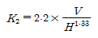
식에서 단위는 V[m/sec], H[m]이다.)- 0.3
- 1.6
- 2.4
- 3.1
(정답률: 56%)
19. 경도가 CaCO3로서 500mg/L이고 Ca+2 100mg/L, Na+ 46mg/L, Cl- 1.3mg/L인 물에서의 Mg+2의 농도(mg/L)는? (단, 원자량은 Ca 40, Mg 24, Na 23, Cl 35.3)
- 30
- 60
- 120
- 240
(정답률: 55%)
20. 지구상의 담수 존재량의 가장 많은 부분을 차지하고 있는 것은?
- 지하수
- 토양수분
- 빙하
- 하천수
(정답률: 82%)
2과목: 상하수도계획
21. 상수도시설의 내진설계 방법이 아닌 것은?
- 등가적정해석법
- 다중회귀법
- 응답변위법
- 동적해석법
(정답률: 65%)
22. 도시 하수처리장의 원형 침전지에 3000m3/day의 하수가 유입되고 위어의 월류부하를 12m3/m-day로 하고자 한다면, 최종 침전지 월류위어(weir)의 길이는?
- 220 m
- 230 m
- 240 m
- 250 m
(정답률: 66%)
23. 하수도시설기준상 축류펌프의 비교회전도(Ns) 범위로 적절한 것은?
- 100 ~ 250
- 200 ~ 850
- 700 ~ 1200
- 1100 ~ 2000
(정답률: 66%)
24. 펌프의 토출량이 0.1m3/sec, 토출구의 유속이 2m/sec로 할 때 펌프의 구경은?
- 약 255 mm
- 약 365 mm
- 약 475 mm
- 약 545 mm
(정답률: 62%)
25. 하수도계획의 목표연도로 옳은 것은?
- 원칙적으로 10년으로 한다.
- 원칙적으로 15년으로 한다.
- 원칙적으로 20년으로 한다.
- 원칙적으로 25년으로 한다.
(정답률: 77%)
26. 연평균 강우량이 1135mm인 지역에 필요한 저수지의 용량(day)은? (단, 가정법 적용)
- 약 126
- 약 146
- 약 166
- 약 186
(정답률: 37%)
27. 상수시설 중 배수지에 관한 설명으로 틀린 것은?
- 유효용량은 시간변동조정용량, 비상대처용량을 합하여 급수구역의 계획1일최대급수량의 12시간분 이상을 표준으로 한다.
- 부득이한 경우 외에는 배수지를 급수지역의 중앙 가까이 설치한다.
- 유효수심은 1~2m 정도를 표준으로 한다.
- 자연유하식 배수지의 표고는 최소동수압이 확보되는 높이여야 한다.
(정답률: 70%)
28. 강우강도
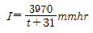
, 유역면적 3.0km2, 유입시간 180sec, 관거길이 1km, 유출계수 1.1, 하수관의 유속 33m/min일 경우 우수 유출량은? (단, 합리식 적용)- 약 29m3/sec
- 약 33m3/sec
- 약 48m3/sec
- 약 57m3/sec
(정답률: 55%)
29. 원심력 펌프의 규정회전수 N = 30회/sec, 규정토출량 Q=0.8m3/sec, 규정 양정 H = 15m 일 때, 펌프의 비교 회전도는? (단, 양흡입이 아님)
- 약 1⑤0
- 약 1250
- 약 1410
- 약 1640
(정답률: 59%)
30. 상수시설의 도수관 중 공기밸브의 설치에 관한 설명으로 틀린 것은?
- 관로의 종단도상에서 상향 돌출부의 하단에 설치해야 하지만 제수 밸브의 중간에 상향 돌출부가 없는 경우에는 높은 쪽의 제수밸브 바로 뒤쪽에 설치한다.
- 관경 400mm 이상의 관에는 반드시 급속공기밸브 또는 쌍구공기 밸브를 설치하고, 관경 350mm 이하의 관에 대해서는 급속공기밸브또는 단구공기밸브를 설치한다.
- 공기밸브에는 보수용의 제수밸브를 설치한다.
- 매설관에 설치하는 공기밸브에는 밸브실을 설치한다.
(정답률: 61%)
31. 하수처리를 위한 생물처리설비 중 회전원판장치에 관한 설명으로 틀린 것은?
- 접촉지의 용량은 액량면적비로 결정한다.
- 처리계열은 2계열 이상으로 하고 각 계열은 2개 이상의 접촉지를 직렬로 배치한다.
- 회전원판의 주변속도는 15~20m/min을 표준으로 한다.
- 접촉지의 내벽과 원판 끝부분과의 간격은 원판직경의 5~8%를 표준으로 한다.
(정답률: 48%)
32. 하수의 계획오염부하량 및 계획유입수질에 관한 내용으로 틀린 것은?
- 계획유입수질 : 계획오염부하량을 계획1일최대오수량으로 나눈 값으로 한다.
- 생활오수에 의한 오염부하량 : 1인1일당 오염부하량 원단위를 기초로 하여 정한다.
- 관광오수에 의한 오염부하량 : 당일관광과 숙박으로 나누고 각각의 원단위에서 추정한다.
- 영업오수에 의한 오염부하량 : 업무의 종류 및 오수의 특징 등을 감안하여 결정한다.
(정답률: 72%)
33. 하수도에 사용되는 펌프형식 중 전양정이 3~12m 일 때 적용하고, 펌프구경은 400mm 이상을 표준으로 하며 양정변화에 대하여 수량의 변동이 적고, 또 수량변동에 대해 동력의 변화도 적으므로 우수용 펌프 등 수위변동이 큰 곳에 적합한 것은?
- 원심펌프
- 사류펌프
- 원심사류펌프
- 축류펌프
(정답률: 63%)
34. 하수도 시설인 중력식 침사지에 대한 설명으로 틀린 것은?
- 침사지의 평균유속은 0.3m/초를 표준으로 한다.
- 저부경사는 보통 1/500~1/1000로 하며 그리트 제거설비의 종류별 특성에 따라 범위가 적용된다.
- 침사지의 표면부하율은 오수침사지의 경우 1800m3/m2일, 우수침사지의 경우 3600m3/m2·일 정도로 한다.
- 침사지 수심은 유효수심에 모래 퇴적부의 깊이를 더한 것으로 한다.
(정답률: 51%)
35. 침전지 침전효율과 관련된 내용으로 옳은 것은?
- 침전제거율 향상을 위해 침전지의 침강면적(A)을 작게 한다.
- 침전제거율 향상을 위해 플록의 침강속도(V)를 작게 한다.
- 침전제거율 향상을 위해 유량(Q)을 크게 한다.
- 가장 기본적인 지표는 표면부하율이다.
(정답률: 60%)
36. 천정호(얕은 우물)의 경우 양수량
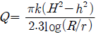
로 표시된다. 반경 0.5m의 천정호 시험정에서 H = 6m, h = 4m, R = 50m의 경우에 Q = 10L/sec의 양수량을 얻었다. 이 조건에서 투수계수 k는?- 0.043 m/분
- 0.073 m/분
- 0.086 m/분
- 0.146 m/분
(정답률: 41%)
37. 배수탑에 대한 설명으로 틀린 것은?
- 배수탑은 총 수심은 20m 정도를 한계로 하여야 한다.
- 유출관의 유출구 중심고는 저수위보다 관경의 2배 이상 낮게 하여야 한다.
- 배수탑에는 고수위에 벨 마우스를 갖는 월류관을 설치하여야 한다.
- 배수탑의 유입관, 유출관, 월류관, 배출관에는 부등침하나 신축에는 관계없으므로 신축이음을 설치할 필요가 없다.
(정답률: 56%)
38. 배수면적이 50 km2인 지역의 우수량이 800m3/s 일 때 이 지역의 강우강도(I)는 몇 mm/hr 인가? (단, 유출계수: 0.83, 우수량의 산출은 합리식 적용)
- 약 70
- 약 75
- 약 80
- 약 85
(정답률: 55%)
39. 계획분뇨처리량 기준으로 옳은 것은?
- 1일평균 분뇨발생량을 기준으로 한다.
- 년간 분뇨발생량을 기준으로 한다.
- 계획지역 수거량을 기준으로 한다.
- 지역별 분뇨처리시설 용량을 기준으로 한다.
(정답률: 53%)
40. 상수도 관종을 선정할 때 고려하여야 하는 기본사항이 아닌 것은?
- 관 재질에 의하여 물이 오염될 우려가 없어야 한다.
- 내압과 외압에 대하여 안전해야 하며 매설조건에 적합해야 한다.
- 통수능력 감소에 따른 내용년수를 고려해야 한다.
- 매설환경에 적합한 시공성을 지녀야 한다.
(정답률: 66%)
3과목: 수질오염방지기술
41. BOD 250mg/L, 유입 폐수량 30000m3/day, MLSS 농도 2500mg/L이고 체류시간이 6시간인 폐수를 활성 슬러지법으로 처리한다면 BOD 슬러지부하는?
- 0.4 kgBOD/kgMLSS·day
- 0.3 kgBOD/kgMLSS·day
- 0.2 kgBOD/kgMLSS·day
- 0.1 kgBOD/kgMLSS·day
(정답률: 61%)
42. SBR의 장점이 아닌 것은?
- BOD 부하의 변화폭이 큰 경우에 잘 견딘다.
- 처리용량이 큰 처리장에 적용이 용이하다.
- 슬러지 반송을 위한 펌프가 필요 없어 배관과 동력이 절감된다.
- 질소와 인의 효율적인 제거가 가능하다.
(정답률: 55%)
43. 펜톤처리공정에 관한 설명으로 가장 거리가 먼 것은?
- 펜톤시약의 반응시간은 철염과 과산화수소수의 주입 농도에 따라 변화를 보인다.
- 펜톤시약을 이용하여 난분해성 유기물을 처리하는 과정은 대체로 산화반응과 함께 pH조절, 펜톤산화, 중화 및 응집, 침전으로 크게 4단계로 나눌 수 있다.
- 펜톤시약의 효과는 pH 8.3~10 범위에서 가장 강력한 것으로 알려져 있다.
- 폐수의 COD는 감소하지만 BOD는 증가할 수 있다.
(정답률: 54%)
44. 깊이가 2.75m 인 조에서 물의 체류시간을 2분으로 할 때 G값을 500s-1로 유지하는데 필요한 공기의 양은? (단, 수온 5℃인 경우, Q= 0.21m3/s, μ = 1.518×10-3N·s/m2, Pa: 101.3×103N/m2, P =Pa × Qa × ln[(10.3+h)/10.3]식 적용)
- 약 0.40 m3/s
- 약 0.55 m3/s
- 약 0.86 m3/s
- 약 1.21 m3/s
(정답률: 28%)
45. 분리막을 이용한 수처리 방법 중 추진력이 정수압차가 아닌 것은?
- 투석
- 정밀여과
- 역삼투
- 한외여과
(정답률: 64%)
46. 부유입자에 의한 백색광 산란을 설명하는 Raleigh의 법칙은? (단, I : 산란광의 세기, V : 입자의 체적, λ : 빛의 파장, n : 입자의 수)
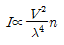
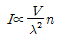
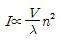
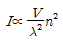
(정답률: 64%)
47. 반지름이 8cm인 원형 관로에서 유체의 유속이 20m/sec일 때 반지름이 40cm인 곳에서의 유속(m/sec)은? (단, 유량은 동일하며 기타 조건은 고려하지 않음)
- 0.8
- 1.6
- 2.2
- 3.4
(정답률: 56%)
48. 기계적으로 청소가 되는 바 스크린의 바(bar) 두께는 5mm이고, 바 간의 거리는 30mm이다. 바를 통과하는 유속이 0.90m/s일 때 스크린을 통과하는 수두손실은? (단,
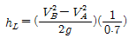
)- 0.0157 m
- 0.0238 m
- 0.0325 m
- 0.0452 m
(정답률: 40%)
49. 활성슬러지공법으로부터 1일 3000 kg(건조고형물 기준)이 발생 되는 폐슬러지를 호기성으로 소화처리 하고자 할 때 소화조의 용적(m3)은? (단, 폐슬러지 농도는 3%, 수온이 20℃, 수리학적 체류시간 23일, 비중 1.03)
- 약 1515
- 약 1725
- 약 1945
- 약 2233
(정답률: 44%)
50. 폐수 처리시설을 설치하기 위하여 다음 설계기준으로 처리하고자 한다. 필요한 활성슬러지 반응조의 수리학적 체류시간(HRT)은? (단, 설계기준 : 일 폐수량 40L, BOD 농도 20000mg/L, MLSS5000mg/L, F/M 1.5kgBOD/kgMLSS·d)
- 24hr
- 48hr
- 64hr
- 88hr
(정답률: 54%)
51. 인구 145000 명인 도시에 완전혼합 활성슬러지 처리장을 설계하고자 한다. 다음과 같은 조건을 이용하여 유출수 BOD5 10mg/L일 때 반응조의 부피는?
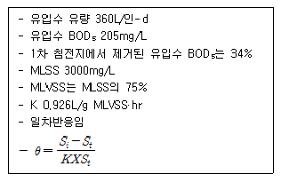
- 약 12000m3
- 약 13000m3
- 약 14000m3
- 약 15000m3
(정답률: 33%)
52. BAC(Biological Activated Carbon: 생물활성탄)의 단점에 관한 설명으로 틀린 것은?
- 활성탄이 서로 부착, 응집되어 수두손실이 증가될 수 있다.
- 정상상태까지의 기간이 길다.
- 미생물 부착으로 일반 활성탄보다 사용시간이 짧다.
- 활성탄에 병원균이 자랐을 때 문제가 야기될 수 있다.
(정답률: 59%)
53. 활성슬러지법과 비교하여 생물막 공법의 특징이 아닌 것은?
- 적은 에너지를 요구한다.
- 단순한 운전이 가능하다.
- 이차침전지에서 슬러지 벌킹의 문제가 없다.
- 충격독성부하로부터 회복이 느리다.
(정답률: 53%)
54. 수질성분이 금속 하수도관의 부식에 미치는 영향으로 틀린 것은?
- 잔류염소는 용존산소와 반응하여 금속 부식을 억제시킨다.
- 용존산소는 여러 부식 반응속도를 증가시킨다.
- 고농도의 염화물이나 황산염은 철, 구리, 납의 부식을 증가시킨다.
- 암모니아는 착화물의 형성을 통하여 구리, 납 등의 용해도를 증가시킬 수 있다.
(정답률: 61%)
55. 활성슬러지 처리변법별 F/M 비가 가장 높은 것은?
- 표준활성슬러지법
- 순산소활성슬러지법
- 장기포기법
- 산화구법
(정답률: 48%)
56. Cd2+가 함유된 폐수의 pH를 높여주면 수산화카드뮴의 침전물이 생성되어 제거 된다. 20℃, pH 11에서 폐수 내 이론적 카드뮴이온의 농도는? (단, 20℃,pH 11에서 수산화카드뮴의 용해도적은 4.0×10-14 이며 카드뮴 원자량은 112.4이다. )
- 3.5×10-5 mg/L
- 4.5×10-5 mg/L
- 3.5×10-3 mg/L
- 4.5×10-3 mg/L
(정답률: 23%)
57. 정수장 여과지의 여상 내부에 기포가 생기면 여과효율이 급격히 감소한다. 여상에 기포가 갇히게 되는 원인이 아닌 것은?
- 여상 내부의 수온 상승
- 여상 내부의 압력이 대기압보다 저하
- 여상 내부에 조류가 증식하여 산소 발생
- 여상 내부 수두손실의 급격한 변동
(정답률: 38%)
58. 수은계 폐수 처리방법으로 틀린 것은?
- 수산화물 침전법
- 흡착법
- 이온교환법
- 황화물침전법
(정답률: 45%)
59. 고도 수처리를 하기 위한 방법인 정밀여과에 관한 설명으로 틀린 것은?
- 막은 대칭형 다공성막 형태이다.
- 분리형태는 pore size 및 흡착현상에 기인한 체거름이다.
- 추진력은 농도차이다.
- 전자공업의 초순수제조, 무균수제조, 식품의 무균여과에 적용한다.
(정답률: 62%)
60. 포기조 내의 혼합액 중 부유물 농도(MLSS)가 2000g/m3, 반송슬러지의 부유물 농도가 9576g/m3 이라면 슬러지 반송률은? (단, 유입수내 SS는 고려하지 않음)
- 23.2%
- 26.4%
- 28.6%
- 32.8%
(정답률: 58%)
4과목: 수질오염공정시험기준
61. 현장에서 용존산소 측정이 어려운 경우에는 시료를 가득 채운300mL BOD병에 황산망간용액 1mL, 알칼리성 요오드화칼륨-아지이드화 나트륨 용액 1mL를 넣는다. 만약 시료 중 Fe(III)이 함유되어 있을 때에 넣어주는 용액은?
- KF 용액
- KI 용액
- H2SO4
- 전분용액
(정답률: 52%)
62. 웨어의 수두가 0.8m, 절단의 폭이 5m인 4각 웨어를 사용하여 유량을 측정하고자 한다. 유량계수가 1.6일 때 유량(m3/day)은?
- 약 4345
- 약 6925
- 약 8245
- 약 10370
(정답률: 46%)
63. 음이온 계면활성제를 자외선/가시선 분광법으로 측정할 때 사용되는 시약으로 옳은 것은?
- 메틸 레드
- 메틸 오렌지
- 메틸렌 블루
- 메틸렌 옐로우
(정답률: 67%)
64. 아연(자외선/가시선 분광법)정량에 관한 설명 중 ( )안의 내용으로 알맞은 것은?
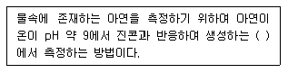
- 적갈색 킬레이트 화합물의 흡광도를 460nm
- 적색 킬레이트 화합물의 흡광도를 520nm
- 황색 킬레이트 화합물의 흡광도를 560nm
- 청색 킬레이트 화합물의 흡광도를 620nm
(정답률: 52%)
65. 다음 설명 중 틀린 것은?
- 연속측정 또는 현장측정의 목적으로 사용하는 측정기기는 공정시험방법에 의한 측정치와의 정확한 보정을 행한 후 사용할 수 있다.
- 검정곡선은 분석물질의 농도변화에 따른 지시값을 나타낸 것을 말한다.
- 표준편차율이라 함은 평균값을 표준편차로 나눈 값의 백분율로서 반복조작시의 편차를 상대적으로 표시한 것을 말한다.
- 기기검출한계(IDL)란 시험분석 대상물질을 기기가 검출할 수 있는 최소한의 농도 또는 양을 의미한다.
(정답률: 47%)
66. 시료채취 시 유의사항에 관한 내용으로 가장 거리가 먼 것은?
- 채취용기는 시료를 채우기 전에 시료로 3회 이상 세척 후 사용한다.
- 수소이온을 측정하기 위한 시료를 채출할 때에는 운반 중 공기와접촉이 없도록 용기에 가득 채운다.
- 휘발성유기화합물 분석용 시료를 채취할 때에는 뚜껑에 격막이 생성되지 않도록 주의한다.
- 시료채취량은 시험항목 및 시험회수에 따라 차이가 있으니 보통3~5리터 정도이다.
(정답률: 59%)
67. 다이페닐카바지이드와 반응하여 생성하는 적자색 착화합물의 흡광도를 540nm에서 측정하는 중금속은?
- 6가 크롬
- 인산염인
- 구리
- 총인
(정답률: 63%)
68. 정량한계(LOQ)를 옳게 표시한 것은?
- 정량한계 = 3 × 표준편차
- 정량한계 = 3.3 × 표준편차
- 정량한계 = 5 × 표준편차
- 정량한계 = 10 × 표준편차
(정답률: 62%)
69. 물벼룩을 이용한 급성 독성시험법에서 사용하는 용어의 정의로 틀린 것은?
- 치사 : 일정 비율로 준비된 시료에 물벼룩을 투입하고 24시간 경과 후 시험용기를 살며시 움직여주고, 15초 후 관찰했을 때 아무반응이 없는 경우를 ‘치사’라 판정한다.
- 유영저해 : 독성물질에 의해 영향을 받아 일부 기관(촉각, 후복부등)이 움직임이 없을 경우를 ‘유영저해’로 판정한다.
- 반수영향농도 : 투입 시험생물의 50%가 치사 혹은 유영저해를 나타낸 농도이다.
- 지수식 시험방법 : 시험기간 중 시험용액을 교환하여 농도를 지수적으로 계산하는 시험을 말한다.
(정답률: 53%)
70. 부유물질 측정 시 간섭물질에 관한 설명으로 틀린 것은?
- 증발잔류물이 1000mg/L 이상인 경우의 해수, 공장폐수 등은 특별히 취급하지 않을 경우 높은 부유물질 값을 나타낼 수 있다.
- 큰 모래입자 등과 같은 큰 입자들은 부유물질 측정에 방해를 주며이 경우 직경 1mm 여과지에 먼저 통과시킨 후 분석을 실시한다.
- 철 또는 칼슘이 높은 시료는 금속침전이 발생하며 부유물질 측정에 영향을 줄 수 있다.
- 유지 및 혼합되지 않는 유기물도 여과지에 남아 부유 물질 측정값을 높게 할 수 있다.
(정답률: 56%)
71. 수산화나트륨(NaOH) 10g을 물에 녹여서 500mL로 하였을 경우몇 N 용액인가?
- 1.0 N
- 0.25 N
- 0.5 N
- 0.75 N
(정답률: 60%)
72. 흡광도 측정에서 투과율이 30%일 때 흡광도는?
- 0.37
- 0.42
- 0.52
- 0.63
(정답률: 58%)
73. 원자흡수분광광도법에 의한 금속측정에 관한 설명으로 가장 거리가 먼 것은?
- 아연검정에 있어서 디티죤에 따라 선택추출한 경우는 니켈이나 코발트를 억제하기 때문에 펠옥키소 아황산 칼륨을 가한다.
- 6가 크롬 측정에 있어서 공존 금속류에 의한 간섭을 억제하기 위해서는 황산나트륨을 첨가한다.
- 용해성 철 측정에 있어서 다량의 실리카가 포함되어 있을 때는 칼슘을 첨가하여 그 간섭을 억제한다.
- 용해성 망간 측정에 있어서 미량의 경우에는 철 공침법으로 농축한다.
(정답률: 24%)
74. 다이크롬산칼륨법에 의한 화학적 산소요구량에 관한 설명으로 가장 거리가 먼 것은?
- 2시간 이상 끓인 다음 최초에 넣은 중크롬산칼륨액의 60~70%가 남도록 취하여야 한다.
- 황산제일철암모늄용액으로 적정하여 시료에 의해 소비된 다이크롬 산칼륨을 계산하고 이에 상당하는 산소의 양을 측정하는 방법이다.
- 지표수, 지하수, 폐수 등에 적용하며, COD 5~50mg/L의 낮은 농도범위를 갖는 시료에 적용한다.
- 염소이온의 농도가 1000mg/L 이상의 농도일 때에는 COD값이 최소한 250mg/L 이상의 농도이어야 한다.
(정답률: 37%)
75. 원자흡수분광광도법에서 일어나는 간섭의 설명으로 가장 거리가 먼 것은?
- 광학적 간섭 : 분석하고자 하는 원소의 흡수파장과 비슷한 다른원소의 파장이 서로 겹쳐 비이상적으로 높게 측정되는 경우
- 물리적 간섭 : 표준용액과 시료 또는 시료와 시료 간의 물리적 성질(점도, 밀도, 표면장력등)의 차이 또는 표준물질과 시료의 매질(matrix) 차이에 의해 발생
- 화학적 간섭 : 불꽃의 온도가 분자를 들뜬 상태로 만들기에 충분히 높지 않아서, 해당 파장을 흡수하지 못하여 발생
- 이온화 간섭 : 불꽃온도가 너무 낮을 경우 중성원자에서 전자를 빼앗아 이온이 생성될 수 있으며 이 경우 양(+)의 오차가 발생
(정답률: 61%)
76. 기체크로마토그래피법으로 인 또는 유황화합물을 선택적으로 검출하려 할 때 사용되는 검출기는?
- ECD
- FID
- FPD
- TCD
(정답률: 48%)
77. 하천의 수심이 0.5m 일 때 유속을 측정하기 위해 각 수심의 유속을 측정한 결과 수심 20%지점 1.7m/sec, 수심 40%지점 1.5m/sec, 60%지점 1.3m/sec, 80%지점 1.0m/sec이었다. 평균 유속(m/sec, 소구간단면기준)은?
- 1.15
- 1.25
- 1.35
- 1.45
(정답률: 49%)
78. 폐수 중의 비소를 자외선/가시선분광법으로 측정하려고 한다. 비소 정량에 방해하는 황화수소 기체를 제거할 때 사용되는 시약은?
- 몰리브덴산나트륨
- 나트륨붕소
- 안티몬수은
- 아세트산납
(정답률: 45%)
79. BOD 측정용 시료의 전처리 조작에 관한 설명으로 가장 거리가 먼 것은?
- 산성 시료는 수산화나트륨용액(1M)으로 중화시킨다.
- 알칼리성 시료는 염산용액(1M)으로 중화시킨다.
- 일반적으로 잔류염소를 함유한 시료는 반드시 식종을 실시한다.
- 수온이 20℃ 이상인 시료는 10℃ 이하로 식힌 후 통기시켜 산소를 포화시켜 준다.
(정답률: 51%)
80. 시료의 전처리 방법인 회화에 의한 분해방법의 설명으로 가장 거리가 먼 것은?
- 시료 중에 염화암모늄, 염화마그네슘 등이 다량 함유된 경우에는 납, 철, 주석, 아연 등이 휘산되어 손실을 가져오므로 주의하여야 한다.
- 시료 적당량(100~500mL)을 취하여 백금, 실리카 또는 자체증발 접시에 넣고 물중탕 또는 열판에서 가열하여 증발건조 한다.
- 잔류물이 녹으면 냉수 100mL를 넣고 여과하여 거름종이를 냉수로 2회 씻어준다.
- 목적성분이 400℃ 이상에서 휘산되지 않고 쉽게 회화될 수 있는 시료에 적용된다.
(정답률: 56%)
5과목: 수질환경관계법규
81. 오염총량관리기본방침에 포함되어야 하는 사항으로 틀린 것은?
- 오염총량관리지역 현황
- 오염총량관리의 목표
- 오염원의 조사 및 오염부하량 산정방법
- 오염총량관리의 대상 수질오염물질 종류
(정답률: 46%)
82. 상수원 구간의 수질오염경보인 조류경보 단계중 [관심]단계의 발령·해제기준으로 옳은 것은?
- 2회 연속 채취 시 남조류 세포수가 1000세포/mL 미만인 경우
- 2회 연속 채취 시 남조류 세포수가 1000세포/mL 이상 10000세포/mL 미만인 경우
- 2회 연속 채취 시 남조류 세포수가 5000세포/mL 이상 50000세포/mL 미만인 경우
- 2회 연속 채취 시 남조류 세포수가 10000세포/mL 이상 1000000세포/mL 미만인 경우
(정답률: 50%)
83. 환경기술인 등의 교육기관을 맞게 짝지은 것은?
- 국립환경과학원 - 환경보전협회
- 국립환경과학원 - 한국환경공단
- 국립환경인력개발원 - 환경보전협회
- 국립환경인력개발원 - 한국환경공단
(정답률: 59%)
84. 방지시설설치의 면제를 받을 수 있는 기준에 해당되는 경우가 아닌 것은?
- 배출시설의 기능 및 공정상 오염물질이 항상 배출허용기준 이하로 배출되는 경우
- 폐수처리업의 등록을 한 자에게 환경부령이 정하는 폐수를 전량 위탁처리하는 경우
- 발생 폐수의 전량 재이용 등 방지시설을 설치하지 아니하고도 수질오염물질을 적정하게 처리할 수 있는 경우
- 발생 폐수를 폐수종말처리시설에 재배출하여 처리하는 경우
(정답률: 40%)
85. 위임업무 보고사항 중 업무내용과 보고기일이 잘못 짝지어진 것은?
- 폐수처리업에 대한 등록·지도단속 실적 및 처리실적 - 매반기 종료 후 15일 이내
- 폐수위탁·사업장 내 처리현황 및 처리실적 - 다음해 1월 15일 까지
- 배출업소 등에 따른 수질오염사고 발생 및 조치사항 - 사고발생시
- 과징금 부과 실적 - 매분기 종료 후 15일 이내
(정답률: 36%)
86. 사업장별 환경기술인의 자격기준에 관한 설명으로 알맞지 않는 것은?(관련 규정 개정전 문제로 여기서는 기존 정답인 1번을 누르면 정답 처리됩니다. 자세한 내용은 해설을 참고하세요.)
- 방지시설 설치면제대상 사업장과 배출시설에서 배출되는 오염물질 등을 공동방지시설에서 처리하게 하는 사업장은 4,5종 사업장에 해당하는 환경기술인을 두어야 한다.
- 연간 90일 미만 조업하는 1,2,3종 사업장은 4,5종 사업장에 해당 하는 환경기술인을 선임할 수 있다.
- 공동방지시설에 있어서 폐수배출량이 4종 및 5종 사업장의 규모에 해당하는 경우에는 3종 사업장에 해당하는 환경기술인을 두어야한다.
- 1종 또는 2종사업장 중 1월간 실제 작업한 날만을 계산하여 1일 평균 17시간 이상 작업하는 경우에 그 사업장은 환경기술인을 각 2인 이상을 두어야 한다. 이 경우 각각 1인을 제외한 나머지 인원은 3종 사업장에 해당하는 환경기술인으로 대체할 수 있다.
(정답률: 43%)
87. 다음 중 폐수종말처리시설 기본계획에 포함되어야 할 사항으로 틀린 것은?
- 폐수종말처리시설에서 배출허용기준 적합여부 및 근거에 관한 사항
- 폐수종말처리시설의 폐수처리 계통도, 처리능력 및 처리방법에 관한 사항
- 폐수종말처리시설의 설치 · 운영자에 관한 사항
- 오염원 분포 및 폐수배출량과 그 예측에 관한 사항
(정답률: 16%)
88. 오염총량초과부과금에 관한 설명으로 틀린 것은?
- 할당오염부하량등을 초과하여 배출한 자로부터 오염총량초과 부과금을 부과·징수한다.
- 오염총량초과부과금은 초과배출이익에 초과율별·위반횟수별·지역별 부과계수를 각각 곱하여 산정한다.
- 오염총량초과부과금 납부통지를 받은 자는 그 납부통지를 받은 날 부터 15일 이내에 관제센터에 오염총량초과부과금 조정을 신청할수 있다.
- 오염총량초과부과금의 납부통지는 부과사유가 발생한 날부터 60일 이내에 하여야 한다.
(정답률: 36%)
89. 측정망 설치계획 결정·고시 시 허가를 받은 것으로 볼 수 있는 사항이 아닌 것은?
- 하천법 규정에 의한 하천공사의 허가
- 하천법 규정에 의한 하천점용의 허가
- 농지관리법 규정에 의한 농지점용의 허가
- 도로법 규정에 의한 도로점용의 허가
(정답률: 39%)
90. 배출시설의 설치를 제한할 수 있는 지역의 범위는 누구의 령(令)으로 정하는가?
- 시장, 군수, 구청장
- 시, 도지사
- 환경부장관
- 대통령
(정답률: 37%)
91. 환경부장관이 설치할 수 있는 측정망의 종류와 가장 거리가 먼 것은?
- 비점오염원에서 배출되는 비점오염물질 측정망
- 퇴적물 측정망
- 도심하천 측정망
- 공공수역 유해물질 측정망
(정답률: 53%)
92. 기타수질오염원 시설인 골프장의 규모기준은? (단, 골프장 : 체육시설의 설치·이용에 관한 법률 시행령에 따른 골프장)
- 면적 10만m2 이상이거나 3홀 이상
- 면적 10만m2 이상이거나 9홀 이상
- 면적 3만m2 이상이거나 3홀 이상
- 면적 3만m2 이상이거나 9홀 이상
(정답률: 46%)
93. 1일 800m3 의 폐수가 배출되는 사업장의 환경기술인의 자격에 관한 기준은?
- 수질환경기사 1명 이상
- 수질환경산업기사 1명 이상
- 환경기능사 1명 이상
- 2년 이상 수질분야 환경관련 업무에 직접 종사한 자 1명 이상
(정답률: 58%)
94. 오염물질 희석처리의 인정을 받으려는 자가 시·도지사에게 제출 하여야 하는 서류가 아닌 것은?
- 처리하려는 폐수의 농도
- 희석처리의 불가피성
- 희석처리방법 및 계통도
- 처리하려는 폐수의 특성
(정답률: 39%)
95. 수질환경기준(하천) 중 사람의 건강보호를 위한 전수역에서 각 성분별 환경기준으로 맞는 것은?
- 비소(As) : 0.1 mg/L 이하
- 납(Pb) : 0.01 mg/L 이하
- 6가 크롬(Cr+6) : 0.⑤ mg/L 이하
- 음이온계면활성제(ABS) : 0.01 mg/L 이하
(정답률: 56%)
96. 일일기준초과배출량의 산정방법으로 맞는 것은?
- 일일유량 × 배출허용기준농도 × 10-6
- 일일유량 × 배출허용기준농도 × 10-3
- 일일유량 × 배출허용기준초과농도 × 10-6
- 일일유량 × 배출허용기준초과농도 × 10-3
(정답률: 43%)
97. 초과배출부과금 산정 시 적용되는 위반횟수별 부과계수에 관한 내용이다. ( )에 알맞은 것은?
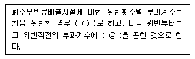
- ㉠ 1.5, ㉡ 1.3
- ㉠ 1.8, ㉡ 1.5
- ㉠ 2.1, ㉡ 1.7
- ㉠ 2.4, ㉡ 1.9
(정답률: 62%)
98. 수질 및 수생태계 보전에 관한 법률에서 사용하는 용어 정의로 틀린 것은?
- 폐수란 액체성 또는 고체성의 수질오염물질이 혼입되어 그대로 사용할 수 없는 물로 환경부령이 정하는 것을 말한다.
- 수면관리자란 다른 법령에 따라 호소를 관리하는 자를 말한다. 이 경우 동일한 호소를 관리하는 자가 둘 이상인 경우에는 하천법에 따른 하천관리청 외의 자가 수면관리자가 된다.
- 특정수질유해물질이란 사람의 건강, 재산이나 동식물의 생육에 직접 또는 간접으로 위해를 줄 우려가 있는 수질오염물질로서 환경부령으로 정하는 것을 말한다.
- 수질오염방지시설인란 점오염원, 비점오염원 및 기타 수질오염원으로부터 배출되는 수질오염물질을 제거하거나 감소하게 하는 시설로서 환경부령으로 정하는 것을 말한다.
(정답률: 33%)
99. 기타수질오염원의 대상과 규모 기준으로 틀린 것은?
- 자동차 폐차장 시설로서 면적 1500m2 이상인 시설
- 조류의 알을 물세척만 하는 시설로서 물 사용량이 1일 5m3 이상인 시설
- 농산물을 보관·수송 등을 위하여 소금으로 절임만 하는 시설로서 용량 10m3 이상인 시설
- 「내수면 어업법」에 따른 가두리양식어장 으로서 수조 면적 합계 500m2 이상인 시설
(정답률: 44%)
100. 변경승인을 받아야 할 폐수종말처리시설 기본계획의 중요사항 중 “환경부령이 정하는 중요사항”의 변경(기준)으로 가장 적합한 것은?
- 총 사업비의 100분의 10 이상에 해당하는 사업비
- 총 사업비의 100분의 20 이상에 해당하는 사업비
- 총 사업비의 100분의 25 이상에 해당하는 사업비
- 총 사업비의 100분의 50 이상에 해당하는 사업비
(정답률: 36%)